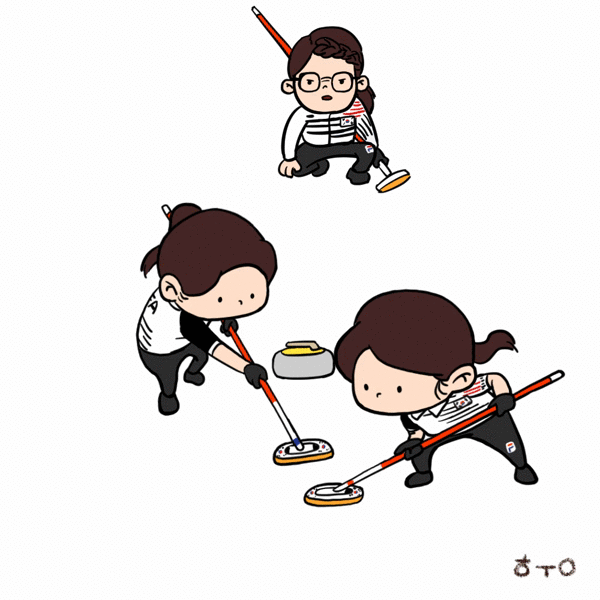
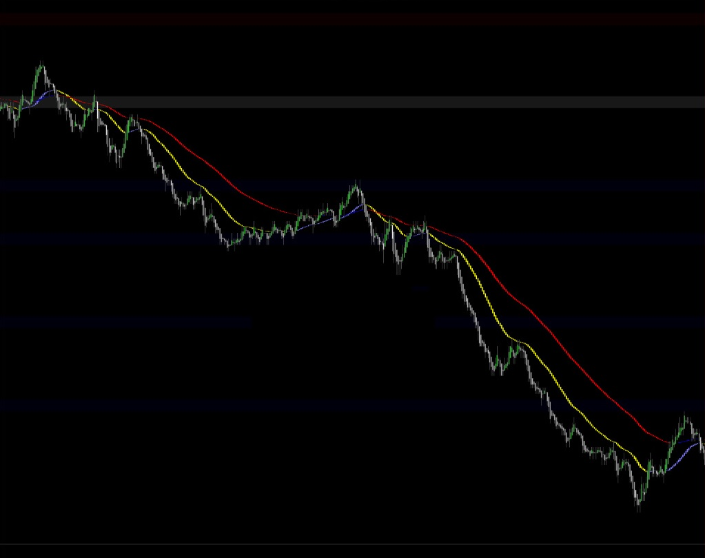

해외선물 - 차트세팅

선물을 매매할 때 중요한것중에 하나가 바로 차트세팅
스캘핑의 경우는 복잡한 분봉보다는 간단하게 보여주는 틱차트로해서 기간도 짧게 잡아야하고
데이트레이딩의 경우 조금 긴 틱차트를 쓰지만 틱차트가 익숙하지 않은분들은 1분봉 5분봉을 쓰기도 한다
월가에 널리 퍼져있는 해묵은 미신같은게 있는데 바로 피보나치 숫자
정말로 그게 효과가 있는지 없는지는 잘 모르겠지만 내가 근무하던 증권사도 그렇고
프로 트레이더나 헤지펀드들도 대부분 차트세팅을 피보나치 숫자로 하는 경우가 많다
미국 증시에서 데이트레이더들이 제일 많이 쓰는 차트 세팅이 233틱 610틱 987틱이다
물론 피보나치 숫자이다
그게 정말로 복잡한 통계에 의한 수학적 알고리듬으로 풀어봤을 때
잘 맞을 수 있는 근거있는 숫자라기 보다는 너도나도 사용하는 사람들이 많다 보니
저절로 잘맞게 되었다는..매우 역설적인
마치 일봉상 200일 이평선처럼 증시에 기본이 된것 같다
그럼 매매에 필요한 차트세팅에 대해 알아보자
먼저 짧은 마디 하나 따먹는 스캘핑 차트
여기서 사용하는 이평선도 당연 피보나치 숫자인 34일과 89일선 두가지.
34일선은 매매신호를 잡아주고 89일선은 단기추세로 이평선의 정배열 역배열을 보는 기준이 된다
사실 이평선은 어느 숫자를 쓰던 별 큰 의미는 없다.
그저 매매할떄 기준을 잡아주고 배열상태로 추세파악을 하는 정도의 역할만 할뿐이다
UB 89 틱

ZB 89 틱

위 차트는 Ultra Bond와 30년물 ZB 89틱 차트다
UB는 ZB와 같은 종목이지만 가벼운 선물이라 움직임이 훨씬 크고 강하다
그래서 스캘핑을 하려면 당연 ZB 보다는 움직임이 더 큰 UB를 매매하는게 좋다
위의 쎄팅을 이용하여 스캘핑하는 방법은
먼저 이평선의 기울기와 배열(정배열/역배열)을 통하여 단기 추세를 확인한 후
가능하면 추세진행방향으로만 매매를 한다
1. 매매신호선에 와서 붙었다가 다시 양봉(음봉) 나올때 진입하는 방법과
2. 상향(하향) 돌파하여 매매선(34일선)위에 올라앉은 후 지지받고 다시 나갈때 들어가는 방법
스캘핑은 말그대로 아주 작게 먹고 나와야 한다( 짧은 마디 하나)
이평선을 한개만 가지고 매매할 수도 있지만 두개를 쓰는 이유는 이평선의 배열을 통한 (정배열 역배열)
상승장세인지 하락장세인지 횡보중인지를 빨리 파악하기 용이하기 때문이다
89일선은 지지선이나 저항선의 개념이 아닌 단지 상승 하락의 기준선으로 사용한다
이번에는 데이트레이딩용 차트를 알아보자
UB 233 틱

233틱은 예전부터 증시에서 ES(S&P500)를 단타매매 하는 사람들이 흔히 사용하는 셋업이다
이동평균선도 앞서와 마찬가지로 34일과 89일이고 사용방법도 동일하다.
물론 이평선은 21일도 괜찮고 27일도 상관없다
단지 매매의 기준을 잡는 역할만 하면 된다
이 차트는 주로 하루중 발생하는 긴 추세를 기대하고 들어가는 데이트레이딩용 셋업이다
주로 매매신호선인 34일선에 선물가가 붙었을때 진입해서 선물가가 34일선을 깨고 나올때까지는 무조건 존버하는 데이트레이딩용 차트쎗업이다
이런 데이트레이딩의 장점으로는 추세장이 전개되면 적은양과 한두번의 매매만으로도 큰 수익을 얻을 수 있다는 점이다
하지만 단점으로는 통계상 전체장 중에서 20% 정도밖에 안되는 추세장을 기대하는 매매라 수익이 날 확률이 낮고
나머지 80% 비추세 장세에서는 거듭되는 방향전환으로 인해 계속 손절에 걸리는 어려움이 있다
데이트레이딩이 대부분 실패하는 이유가 바로 추세장이 별로 없다는 것
보조차트
트레이딩을 하다보면 매매차트 외에 여러가지 보조 차트가 필요하다
월봉 주봉 일봉은 물론이고 987틱이나 2100틱 15분 봉 차트를 올려놓고
좀 더 큰 그림을 보는게 좋다
233 틱 차트로 안보이던 중요한 포인트가 2100 틱이나 15분봉에서 보일때가 많다
가능하면 여러가지 다른 차트를 많이 띄워놓고 비교해보면서 매매하는것이 좋다
보다 많은 인포메이션을 가지면 아무래도 승률이 높아진다
참고로
기관이나 프로들이 단타매매에 있어 분봉차트를 잘 사용하지 않는 이유는
분봉차트는 선물가의 움직임에 관계없이 시간이 되면 무조건 봉을 하나씩 그려주기 때문에
쓸데없는 봉의 갯수가 너무 많아져 차트가 복잡해지면서 중요한 신호를 보기에 불편하며
장이 급하게 움직일때는 그 넓은 구간이 그냥 딱 한개의 장대봉이 되어
꼬리가 길어졌다 짧아졌다만 반복하므로 중간에 나타나는 수많은 매매기회를 놓치게 된다
또한 매매신호에 유용하게 사용되는 이동평균선이 분봉에서는 틱차트보다 매끄럽지가 못하다
당연히 진입시기를 놓치는 원인이 될 수 있다
결론
그렇다면..어떤 매매기법으로 매매할 것인가?
스캘핑은 타이밍만 제대로 잡을 줄 알면 적은 수익이 모여서 누적수익이 크게 올리는
그야말로 티끌모아 태산 기법이지만
경험과 실력이 뒷받침되지 못하면 계속 반대로 들어가서 손실이 커질 수 있다
데이트레이딩은 위에서 말한것처럼 장이 추세를 만들지 않으면
거듭되는 헛손질에 조금 수익났다가 곧바로 손실로 마감하기를 반복하기도 하지만
한 번 추세가 만들어지는 날은 큰 수익을 올릴 수 있다
안타와 홈런의 차이다
이런점들을 감안해서
존버매매를 할건지 먹튀매매를 할건지는 본인의 성격에 맞게 선택하면 될것이다
틱차트를 쓸것인지 분봉차트를 쓸것인지도 본인 편한대로 쓰면 된다
어떤 방법이 옳은 방법이냐?
수익이 나는 방법이 옳은 방법이다
오늘도 선물시장에서 성공하기 위해
Discipline
Discipline
Discipline !!!
* 위의 차트 셋업은 미국 국채선물에 국한되며 제시된 셋업과 설명은 절대적이지 않으며 다른 의견이 있을 수도 있습니다